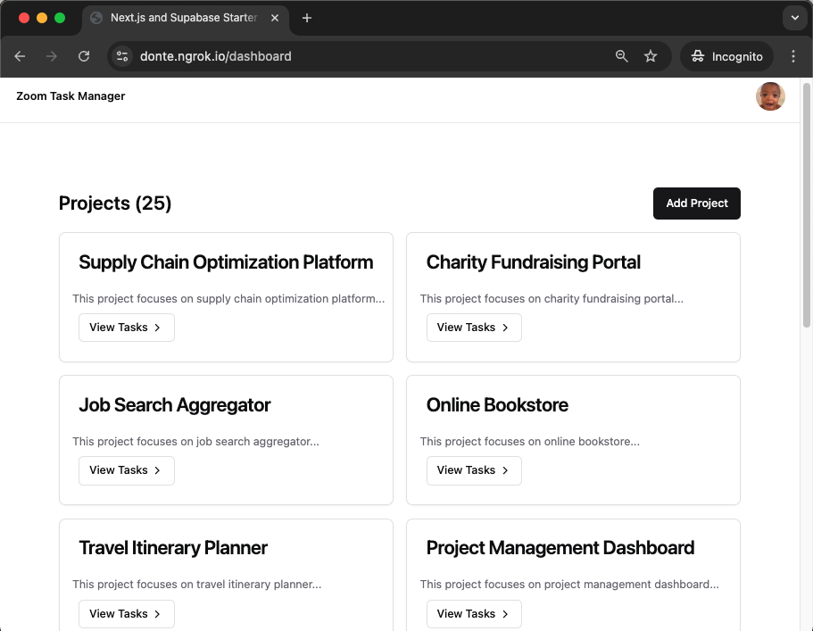

In this codelab, you'll learn how to integrate a Zoom Team Chatbot into an existing Zoom App using a Next.js web app for task management.

The completed web app showcases powerful features that demonstrate how the Zoom App SDK can extend your web app beyond the browser. These features include the following:
This codelab provides the app's starter codebase.
The codelab source can be found at https://github.com/zoom/task-manager-sample. The repository contains a branch for each step of development process. However, this codelab uses only the nextjs-start directory. Take note of the following directories:
* `task-manager-sample-start`: contains the starter code upon which you build.
* `task-manager-sample-end`: contains the solution code for the finished web app.
Copy the nextjs-start folder into your own repository:
mkdir codelab-zoomapp-taskmanager-web
cd codelab-zoomapp-taskmanager-web
rm -rf .git
git init
git commit -a -m "codelab starting point"
git branch -M main
git remote add origin <REPOSITORY_URL>
git push -u origin main
If you see a lower version or you don't have the Supabase CLI installed, run the install command:
brew install supabase/tap/supabase
Inside the folder where you want to create your project, run:
supabase init
This will create a new supabase folder. It's safe to commit this folder to your version control system.
Now, to start the Supabase stack, run:
Inside the folder where you want to create your project, run:
```bash
supabase start
This takes time on your first run because the CLI needs to download the Docker images to your local machine. The CLI includes the entire Supabase toolset, and a few additional images that are useful for local development (like a local SMTP server and a database diff tool).
supabase login
In this section, you'll set up a Supabase project and associate a NextJs web app with it. You'll also set up the Supabase services used by the sample web app.
**1. Sign up **
2. Create a new Project
3. Configure project settings
4. Provisioning the Database
After submitting the details, Supabase will create a new Postgres database instance. This process might take a couple of minutes. You'll see a progress indicator in your dashboard.
5. Access project details
Once the project is set up, navigate to the project's settings where you can find:
The next step requires a callback URL, which looks like this: https://.supabase.co/auth/v1/callback
Under App credentials
Under Redirect URL for OAuth
Under Scopes
When your user signs in, call signInWithOAuth() with zoom as the provider:
async function signInWithZoom() {
const { data, error } = await supabase.auth.signInWithOAuth({
provider: 'zoom',
})
}
In this section, you'll review a few areas of the app's starter codebase to which you'll add functionality in this codelab.
Folder and file structure
The following table contains an overview of the folder and file structure of the app:
Folders and Files | Description |
src/components | React components for filters, headers, tasks details, and reviews |
src/lib | Utility functions that aren't necessarily bound to React or Next.js |
supabase | Supabase-specific code and Supabase configuration |
public | Static assets in the web app, like icons |
src/app | Routing with the Next.js App Router |
src/app/dashboard | An API route handler |
package.json and package-lock.json | Project dependencies with npm |
next.config.js | Next.js-specific configuration (server actions are enabled) |
jsconfig.json | JavaScript language-service configuration |
The app is a Next.js web app that uses the App Router. Server rendering is used throughout the app. For example, the src/app/page.js file is a server component responsible for the main page. The src/components/tasks.jsx file is a client component denoted by the "use client" directive at the beginning of the file.
This project uses Snaplet to seed the database. It leverages Large Language Models to generate more realistic data. When your database structure changes, you'll need to regenerate @snaplet/seed to maintain synchronization with the new structure. You can do this by running:
npx @snaplet/seed sync
npx tsx seed.ts > supabase/seed.sql
Get the access token for the team chat bot
'use server';
const ZOOM_API_BASE_URL = 'https://api.zoom.us/v2';
/**
* Fetches an OAuth token for the Zoom chatbot.
*/
async function getTeamChatBotToken(): Promise<string> {
try {
const response = await fetch(`https://zoom.us/oauth/token?grant_type=client_credentials`, {
method: 'POST',
headers: {
"Authorization": `Basic ${Buffer.from(`${process.env.ZOOM_CLIENT_ID}:${process.env.ZOOM_CLIENT_SECRET}`).toString('base64')}`,
"Content-Type": "application/x-www-form-urlencoded",
},
});
const data = await response.json();
if (!response.ok) {
console.error("❌ OAuth Token Fetch Failed:", data);
throw new Error(`OAuth Token Error: ${response.status} - ${data.error_description || "Unknown error"}`);
}
return data.access_token;
} catch (error) {
console.error("🚨 Error fetching OAuth token:", error);
throw new Error("Failed to retrieve OAuth token");
}
}
/**
* Formats the chatbot message.
*/
function formatMessage(activity: string, text: string, subtasks: string[], location: string): string {
const formattedSubtasks = subtasks.length > 0
? subtasks.map(task => `• ${task}`).join("\n")
: "None";
return [
`📌 Activity: ${activity}\n`,
`💬 Message: ${text}\n`,
`📋 Subtasks:\n${formattedSubtasks}\n`,
`🔗 Ticket: ${location}\n`,
].join("\n");
}
/**
* Builds the correct Zoom Team Chat message payload.
*/
function buildMessagePayload(text: string, location: string) {
return {
robot_jid: process.env.ZOOM_BOT_JID,
to_jid: "tlma8otuqx-ujuoin1k0qq@xmpp.zoom.us",
user_jid: "tlma8otuqx-ujuoin1k0qq@xmpp.zoom.us",
account_id: "-RtWUD64T9KwsSAhmHAjaQ",
content: {
head: {
text: "Task Notification 📢",
},
body: [
{
type: "message",
text: text,
},
{
type: "actions",
limit: 2,
items: [
{
text: "Open Zoom Dashboard",
value: "button1",
style: "Default",
action: "dialog",
dialog: {
size: "M",
link: "https://donte.ngrok.io/zoom-dashboard",
title: { text: "Zoom Dashboard" },
},
},
{
text: "View Task",
value: "button2",
style: "Default",
action: "dialog",
dialog: {
size: "M",
link: location,
title: { text: "View Task Details" },
},
},
],
},
],
},
};
}
/**
* Sends a message to Zoom Team Chat.
*/
async function sendMessageToZoom(accessToken: string, payload: any): Promise<{ success?: boolean; error?: string }> {
try {
console.log("📨 Sending Message to Zoom Chat:", JSON.stringify(payload, null, 2));
const response = await fetch(`${ZOOM_API_BASE_URL}/im/chat/messages`, {
method: "POST",
headers: {
Authorization: `Bearer ${accessToken}`,
"Content-Type": "application/json",
},
body: JSON.stringify(payload),
});
if (!response.ok) {
const errorData = await response.text();
console.error("❌ Zoom API Error:", errorData);
throw new Error(`Zoom API Error: ${response.status} - ${errorData}`);
}
return { success: true };
} catch (error) {
console.error("🚨 Error sending message to Zoom Team Chat:", error);
return { error: "Failed to send message" };
}
}
/**
* Server Action: Handles sending messages to the Zoom Team Chatbot.
*/
export async function sendTeamChatBotMessage(prevState: any, formData: FormData) {
try {
// Extract and validate form data
const text = formData.get("message")?.toString().trim();
const activity = formData.get("activity")?.toString().trim();
const location = formData.get("location")?.toString().trim();
const selectedSubtasks = formData.getAll("subtasks").map(String);
if (!text || !activity || !location) {
return { error: "❌ Missing required fields" };
}
const accessToken = await getTeamChatBotToken();
// Format the message & build the payload
const formattedMessage = formatMessage(activity, text, selectedSubtasks, location);
const messagePayload = buildMessagePayload(formattedMessage, location);
// Send the message
return await sendMessageToZoom(accessToken, messagePayload);
} catch (error) {
console.error("🚨 Error processing Zoom chatbot message:", error);
return { error: "❌ Failed to process request" };
}
}
// Import Server Action
import { sendTeamChatBotMessage } from "@/app/lib/chatbot";
// Handle form submission state
const [state, formAction] = useActionState(sendTeamChatBotMessage, { success: false });
// Redirect after successful form submission
useEffect(() => {
if (state.success) {
router.back()
}
}, [state.success, router]);
Congratulations! You learned how to use Zoom App SDK and Team chat Team buildt with supabase to add features and functionality to a Next.js app. Specifically, you used the following:
$ claat export how-to-write-a-codelab.md
{
key1: "string",
key2: integer,
key3: "string"
}
Copy into section 2 (Below Duration):
### Add a Link
Adding a link!
[Example of a Link](https://www.google.com)
### Add an Image
Adding an image!

### Embed an iframe